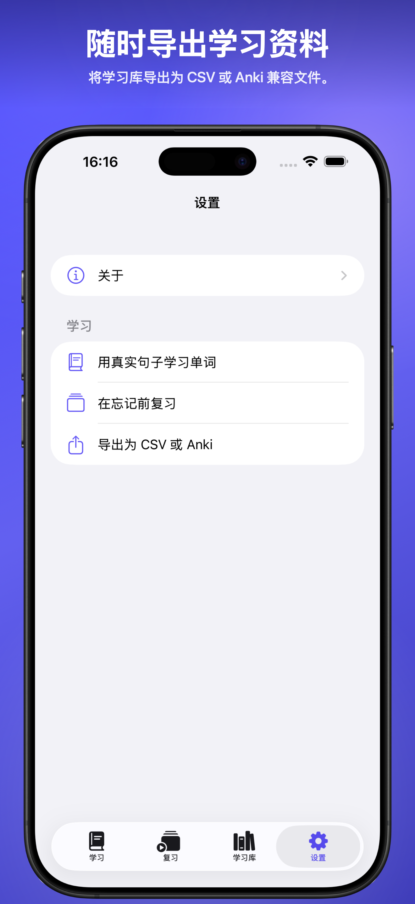
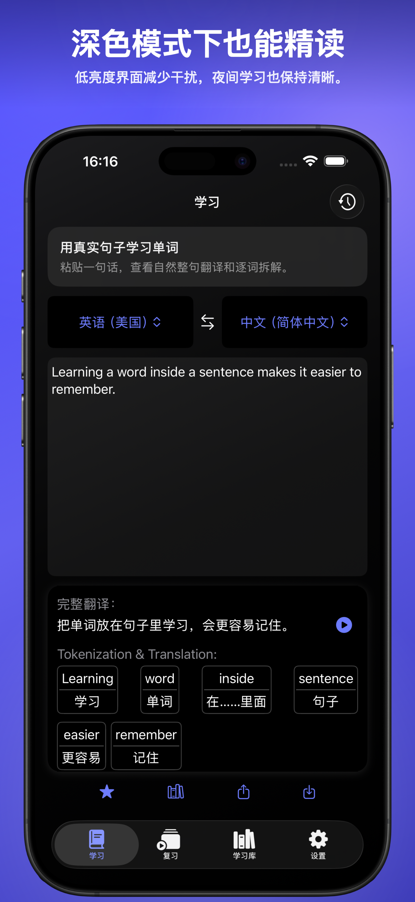

Lihat cara kerja kalimat
Tempel kalimat dan bandingkan terjemahan penuh dengan makna kata dan frasa dalam konteks.
PhraseCut membantu Anda memecah kalimat nyata menjadi bagian yang mudah dipahami, membandingkan terjemahan penuh, menyimpan kata dan frasa berguna, mengulasnya nanti, dan mengekspor pustaka belajar saat dibutuhkan.
Mengapa pelajar memakainya
Tempel kalimat dan bandingkan terjemahan penuh dengan makna kata dan frasa dalam konteks.
Ubah kata, frasa, dan kalimat dari bacaan nyata menjadi item belajar yang dapat digunakan ulang.
Gunakan alur ulasan ringan untuk mengunjungi kembali item tersimpan dan menjaganya tetap aktif.
Cara kerja
Paling cocok
Pratinjau app nyata

Tempel kalimat, bandingkan makna penuh, dan periksa kata dalam konteks.

Kunjungi kembali kata, frasa, dan kalimat yang Anda simpan sebelum lupa.

Simpan materi belajar reusable dari bacaan nyata di satu tempat.

Temukan panduan produk, detail privasi, tautan dukungan, dan app lain di area Tentang.

Tetap membaca dan belajar dengan nyaman dalam lingkungan yang lebih gelap.
Pratinjau light dan dark ditampilkan agar workflow belajar lebih mudah dinilai sebelum diunduh.
FAQ
Tidak. App ini dirancang untuk belajar bahasa. Tujuannya bukan hanya menerjemahkan kalimat, tetapi membantu Anda memahami dan menyimpan bagian berguna untuk ulasan nanti.
Anda dapat menyimpan kata, frasa, dan kalimat penuh, lalu mengulasnya nanti atau mengekspornya ke CSV atau file kompatibel Anki.
Kunjungi halaman Bantuan untuk panduan penggunaan dan Kebijakan Privasi untuk detail penanganan data.